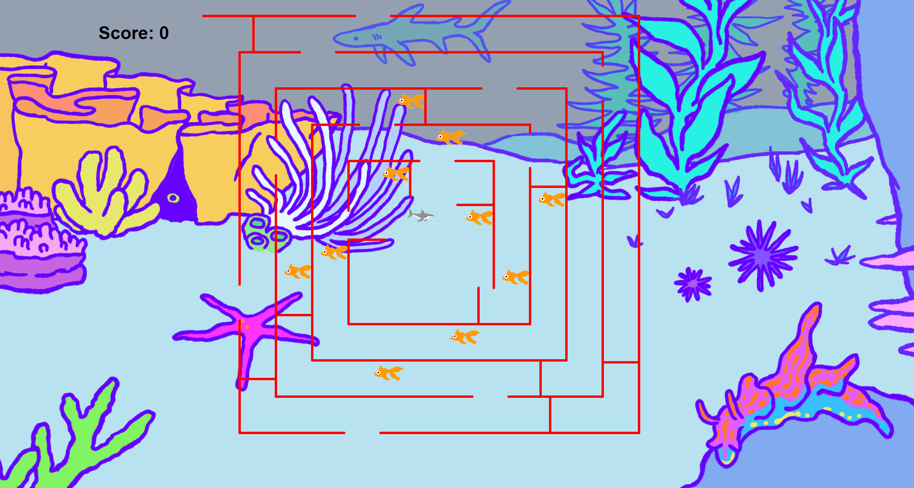

Things I have done:
Project 1.1.9 PLTW
Our program is an apple tree and a cloud in front of the night sky with differently sized stars. The cloud moves back and forth in a loop and the program then checks if the user clicks the apple or not and if the user clicks the apple, it will fall.

Project 1.2.5 PLTW
Our program is a game with a user controllable Shark. The user must control a shark through a maze and eat the fish at different parts of the maze. The program randomly generates a maze as well as fish locations. The program also detects if the user hits a wall, and if a wall is hit the game stops. A score counter is in the top left corner, the user "wins" the game by eating all 10 fish.
Project 1.3.1 PLTW
In this program, the user is prompted for a number 1 - 3 which correlates to the color of the floor in the game. The user then controls a mario's jumps by pressing space to jump over a bowser that comes at random speeds. Jumping over the bowser will add to your score until you collide with the bowser which will then prompt game over and displays your final score.

Scratch Project
In this scratch Project, the player makes a cake by following instructions from the program.